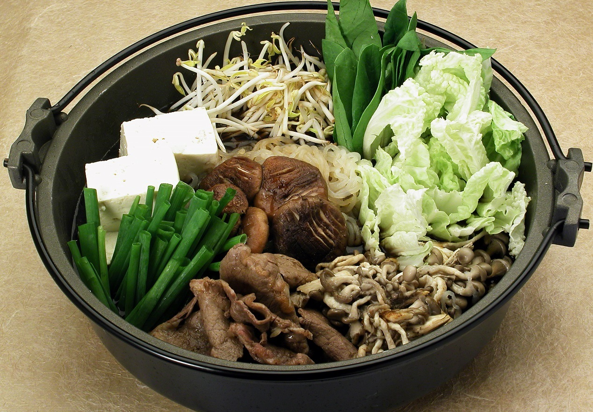
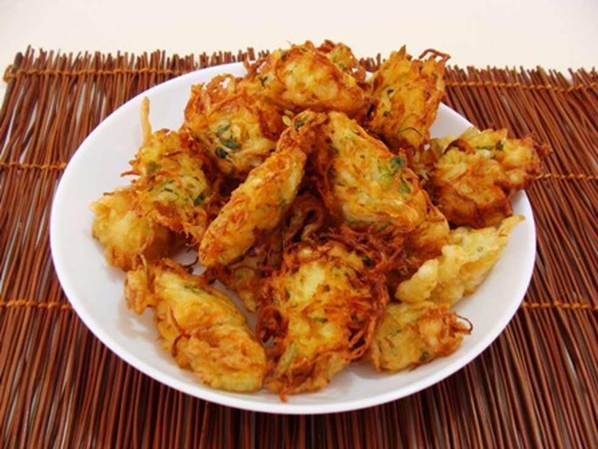

Pratos principais
Aqui tem os pratos principais do Sabor Oriental!

Frango Xadrez
Prato chinês frito e apimentado feito com frango, amendoim, legumes, e pimenta vermelha.
Frango Xadrez
Macarrão chinês frito com legumes e carne
Frango Xadrez
Folhas muito finas de uma massa de farinha de trigo e ovos.A

Frango Xadrez
Cozido que leva carnes fatiadas bem finas, verduras, udon, cogumelos, konnyaku e ito konnyaku, kamaboku etc.
Frango Xadrez
Cone feito de folha de alga com recheio de arroz, peixe e legumes.

Frango Xadrez
Consiste de pedaços fritos de vegetais ou mariscos envoltos num polme fino.